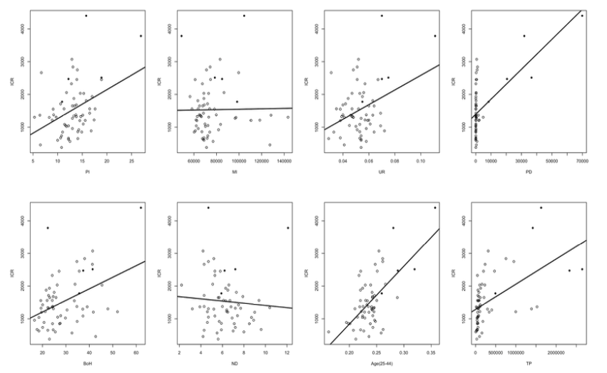
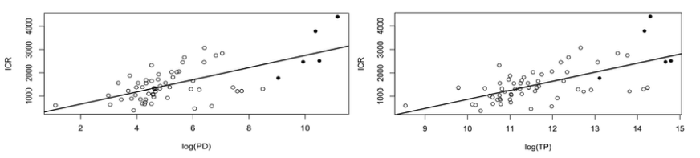

An English version brief summary of our 2023 county-level regression analysis on New York State crime rates, using Box–Cox transformation and model selection via AIC/BIC. The full report (in Mandarin) is available below.
📄 Download Full Report (PDF)We analyze the determinants of crime rate disparities across New York counties in 2023 using a multiple regression framework combined with a Box–Cox transformation to address non-normality and heteroskedasticity. Among nine socioeconomic and demographic variables tested, model selection based on AIC/BIC indicates that median household income, share of college-educated adults, and log total population are the key drivers of crime rate variation. The final model achieves an adjusted R² of 0.615 and shows strong statistical significance overall (F = 33.47, p < 0.001). The results demonstrate that higher income levels are associated with lower crime rates, while education attainment and population scale exhibit positive relationships, reflecting urban concentration effects.
The final Box–Cox transformed model is expressed as:
$$\sqrt{\hat{y}} = -6.538 - 0.0003913\,MI + 0.5123\,BoH + 5.074\,\log(TP)$$
All predictors are statistically significant, with higher education level (BoH) and population size showing positive associations with crime rate, while median income exhibits a negative relationship.
We employed one dependent variable and nine explanatory variables.
All explanatory variables were obtained from the U.S. Census Bureau (2023), while the dependent variable (ICR) was derived from the NYPD’s 2023 official crime statistics. Log transformations were applied to highly skewed variables (PD and TP) to reduce outlier effects and improve linearity.
Before model estimation, scatterplots were used to examine the relationships between each explanatory variable and the index crime rate (ICR) across New York counties. The first figure below displays the pairwise relationships for all nine variables. Visual inspection suggests that some predictors, such as Total Population (TP) and Population Density (PD), exhibit a highly non-linear association with ICR.

Figure 1. Scatterplots of the index crime rate (ICR) against each explanatory variable.
To mitigate this non-linearity and improve the interpretability of the regression model, we applied a log transformation to both PD and TP. The following figure demonstrates that the log-transformed variables show a more linear relationship with ICR, supporting their use in the final model specification.

Figure 2. Scatterplots of ICR versus log-transformed Population Density and Total Population.